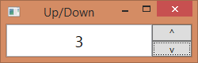

Basics.
Numeric Up/Down control is simplified version of IntegerUpDown control from Extended WPF Toolkit. It provides a TextBox with button spinners that allow incrementing and decrementing int values by using the spinner buttons, keyboard up/down arrows, or mouse wheel.
To keep it simple we'll build application rather than reusable control.
Let�s go step-by-step through development process.
Model
Our model has single property `Value bounded to input text box.
To defining custom model: - Inherit from FSharp.Desktop.UI.Model - To participate in data-binding and send PropertyChange notification property has to be declared as abstract. Base class will provide backing storage for actual values. - Mark your class with AbstractClassAttribute
There are alternative methods to define custom models.
1: 2: 3: 4: 5: 6: 7: |
open FSharp.Desktop.UI [<AbstractClass>] type NumericUpDownEventsModel() = inherit Model() abstract Value: int with get, set |
There are alternative methods to define custom models.